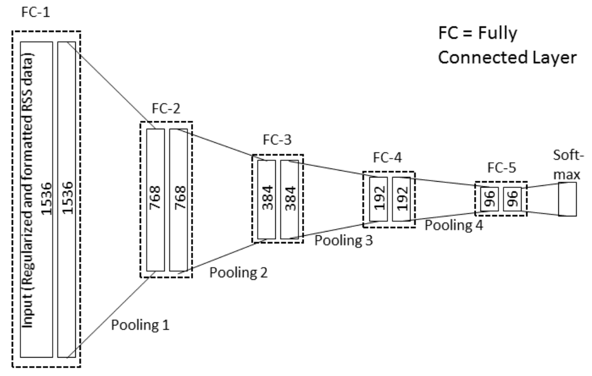

Members


Previous Student
- Dongyang Yao (Graduated in 2016 Summer)
- Xuechao Pan (Graduated in 2016 Summer)
- Renyi Hu (Graduated in 2015 Summer)
- Mengzhu Li (Graduated in 2016 Fall)
- Shiyue Xu (Graduated in 2017 Spring)
- Yueyang Chen (Graduated in 2017 Fall)
Project & Publications

Activity Recognition for Medical Teamwork Based on Passive RFID
We describe a novel and practical activity recognition system for dynamic and complex medical settings using only passive RFID technology. Our activity recognition approach is based on the use of objects that are specific for a given activity. The object-use status is detected from RFID data and the activities are predicted from the statuses of use of different objects. We tagged 10 objects in a trauma room of an emergency department and recorded RFID data for 10 actual trauma resuscitations. More than 20,000 seconds of data were collected and used for analysis. The system achieved a 96% overall accuracy with a 0.74 F-score for detecting use of 10 common resuscitation objects and 95% accuracy with a 0.30 F-Score for activity recognition of 10 medical activities.
Privacy Preserving Dynamic Room Layout Mapping
We present a novel and efficient room layout mapping strategy that does not reveal people’s identity. The system uses only a Kinect depth sensor instead of RGB cameras or a high-resolution depth sensor. The users’ facial details will neither be captured nor recognized by the system. The system recognizes and localizes 3D objects in an indoor environment, that includes the furniture and equipment, and generates a 2D map of room layout. We evaluated this system in two challenging real-world application scenarios: a laboratory room with four people present and a trauma room with up to 10 people during actual trauma resuscitations. The system achieved 80% object recognition accuracy with 9.25 cm average layout mapping error for the laboratory furniture scenario and 82% object recognition accuracy for the trauma resuscitation scenario during six actual trauma cases.

Deep Neural Network for RFID-Based Activity Recognition
We propose a Deep Neural Network (DNN) structure for RFIDbased activity recognition. RFID data collected from several reader antennas with overlapping coverage have potential spatiotemporal relationships that can be used for object tracking. We augmented the standard fully-connected DNN structure with additional pooling layers to extract the most representative features. For model training and testing, we used RFID data from 12 tagged objects collected during 25 actual trauma resuscitations. Our results showed 76% recognition micro-accuracy for 7 resuscitation activities and 85% average micro-accuracy for 5 resuscitation phases, which is similar to existing system that, however, require the user to wear an RFID antenna.
Online Process Phase Detection Using Multimodal Deep Learning
We present a multimodal deep-learning structure that automatically predicts phases of the trauma resuscitation process in real-time. The system first pre-processes the audio and video streams captured by a Kinect’s built-in microphone array and depth sensor. A multimodal deep learning structure then extracts video and audio features, which are later combined through a “slow fusion” model. The final decision is then made from the combined features through a modified softmax classification layer. The model was trained on 20 trauma resuscitation cases (˃13 hours), and was tested on 5 other cases. Our results showed over 80% online detection accuracy with 0.7 F-Score, outperforming previous systems.

Deep Learning for RFID-Based Activity Recognition
We present a system for activity recognition from passive RFID data using a deep convolutional neural network. We directly feed the RFID data into a deep convolutional neural network for activity recognition instead of selecting features and using a cascade structure that first detects object use from RFID data followed by predicting the activity. Because our system treats activity recognition as a multi-class classification problem, it is scalable for applications with large number of activity classes. We tested our system using RFID data collected in a trauma room, including 14 hours of RFID data from 16 actual trauma resuscitations. Our system outperformed existing systems developed for activity recognition and achieved similar performance with process-phase detection as systems that require wearable sensors or manually-generated input. We also analyzed the strengths and limitations of our current deep learning architecture for activity recognition from RFID data.